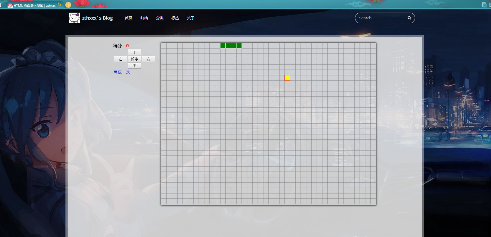

<!DOCTYPE html><html lang="en"><head><meta charset="utf-8"><title>Hexo 增加可嵌入页面作博文的 layout | Zthxxx&#39;s Blog</title><meta name="keywords" content="Hexo,博客"><meta name="viewport" content="width=device-width,initial-scale=1,maximum-scale=1"><meta name="description" content="最近有个需求，想要挂载一个已有的页面到 hexo 博客，比如打开一篇博客，里面是显示的挂的淘宝的主页。 主要是最近要做一些 H5 页面，想找个空间挂载，又暂时不想另外找云服务器做后台，于是就想在我这个已有的博客嵌入这些 H5 页面来显示，每个页面通过一篇博文作载体，博文就是一个 iframe，用来显示每个 H5 页面。 于是做了一个 embed 的 layout 专门作为嵌入页面的布局，现已添加到"><meta name="keywords" content="Hexo,博客"><meta property="og:type" content="article"><meta property="og:title" content="Hexo 增加可嵌入页面作博文的 layout"><meta property="og:url" content="http://blog.zthxxx.me/posts/Hexo-Add-Layout-for-Embed-Page/index.html"><meta property="og:site_name" content="Zthxxx's Blog"><meta property="og:description" content="最近有个需求，想要挂载一个已有的页面到 hexo 博客，比如打开一篇博客，里面是显示的挂的淘宝的主页。 主要是最近要做一些 H5 页面，想找个空间挂载，又暂时不想另外找云服务器做后台，于是就想在我这个已有的博客嵌入这些 H5 页面来显示，每个页面通过一篇博文作载体，博文就是一个 iframe，用来显示每个 H5 页面。 于是做了一个 embed 的 layout 专门作为嵌入页面的布局，现已添加到"><meta property="og:image" content="http://blog.zthxxx.me/posts/Hexo-Add-Layout-for-Embed-Page/测试首页截图.png"><meta property="og:image" content="http://blog.zthxxx.me/posts/Hexo-Add-Layout-for-Embed-Page/测试博文嵌入截图.png"><meta property="og:updated_time" content="2017-04-17T11:53:01.185Z"><meta name="twitter:card" content="summary"><meta name="twitter:title" content="Hexo 增加可嵌入页面作博文的 layout"><meta name="twitter:description" content="最近有个需求，想要挂载一个已有的页面到 hexo 博客，比如打开一篇博客，里面是显示的挂的淘宝的主页。 主要是最近要做一些 H5 页面，想找个空间挂载，又暂时不想另外找云服务器做后台，于是就想在我这个已有的博客嵌入这些 H5 页面来显示，每个页面通过一篇博文作载体，博文就是一个 iframe，用来显示每个 H5 页面。 于是做了一个 embed 的 layout 专门作为嵌入页面的布局，现已添加到"><meta name="twitter:image" content="http://blog.zthxxx.me/posts/Hexo-Add-Layout-for-Embed-Page/测试首页截图.png"><link rel="alternate" href="/atom.xml" title="Zthxxx&#39;s Blog" type="application/atom+xml"><link rel="icon" href="/favicon.ico"><link rel="stylesheet" href="/libs/font-awesome/css/font-awesome.min.css"><link rel="stylesheet" href="/libs/open-sans/styles.css"><link rel="stylesheet" href="/libs/source-code-pro/styles.css"><link rel="stylesheet" href="/css/style.css"><script src="/libs/jquery/2.1.3/jquery.min.js"></script><script src="/libs/jquery/plugins/cookie/1.4.1/jquery.cookie.js"></script><link rel="stylesheet" href="/libs/lightgallery/css/lightgallery.min.css"><link rel="stylesheet" href="/libs/justified-gallery/justifiedGallery.min.css"><script>var _hmt=_hmt||[];!function(){var e=document.createElement("script");e.src="//hm.baidu.com/hm.js?5ccfb44792b47cf157569be97378364e";var t=document.getElementsByTagName("script")[0];t.parentNode.insertBefore(e,t)}()</script></head></html><body><script type="text/javascript">function getUrlParam(e){var a="",t=!1;if(0==this.location.search.indexOf("?")&&this.location.search.indexOf("=")>1)for(arrSource=unescape(this.location.search).substring(1,this.location.search.length).split("&"),i=0;i<arrSource.length&&!t;)arrSource[i].indexOf("=")>0&&arrSource[i].split("=")[0].toLowerCase()==e.toLowerCase()&&(a=arrSource[i].split("=")[1],t=!0),i++;return""==a&&(a=void 0),a}function setRandomBackImg(){var e="/images/background/";if(window.innerWidth>window.innerHeight){var a=~~(70*Math.random());e+="horizontal/",document.body.style.backgroundImage="url("+e+"img_"+a+".jpg)"}else{var a=~~(26*Math.random());e+="vertical/",document.body.style.backgroundImage="url("+e+"img_"+a+".jpg)"}}function setMelanStyle(e){e?(setRandomBackImg(),$("head").append("<link>").children(":last").attr({rel:"stylesheet",type:"text/css",href:"/css/style-melan.css"})):(document.body.style.backgroundImage="none",$('link[rel="stylesheet"][href$="/css/style-melan.css"]').remove())}function setStyleReverseTag(){$("a[href='javascript:reverseSchemes();']").each(function(){this.text="melan"==$.cookie("scheme")?"表世界":"里世界"})}function reverseSchemes(){"melan"!=$.cookie("scheme")?($.cookie("scheme","melan",{expires:365,path:"/"}),setMelanStyle(!0)):($.cookie("scheme","icarus",{expires:365,path:"/"}),setMelanStyle(!1)),setStyleReverseTag()}"icarus"==getUrlParam("scheme")?$.cookie("scheme","icarus",{expires:365,path:"/"}):"melan"==getUrlParam("scheme")&&$.cookie("scheme","melan",{expires:365,path:"/"}),setMelanStyle("melan"==$.cookie("scheme")),$(setStyleReverseTag)</script><div id="container"><header id="header"><div id="header-main" class="header-inner"><div class="outer"><a href="/" id="logo"><i class="logo"></i> <span class="site-title">Zthxxx&#39;s Blog</span></a><nav id="main-nav"> <a class="main-nav-link" href="/">首页</a> <a class="main-nav-link" href="/archives">归档</a> <a class="main-nav-link" href="/categories">分类</a> <a class="main-nav-link" href="/tags">标签</a> <a class="main-nav-link" href="/about">关于</a> <a class="main-nav-link" href="javascript:reverseSchemes();">里世界</a></nav><nav id="sub-nav"><div class="profile" id="profile-nav"> <a id="profile-anchor" href="javascript:;"><i class="fa fa-caret-down"></i></a></div></nav><div id="search-form-wrap"><form class="search-form"> <input type="text" class="ins-search-input search-form-input" placeholder="Search"> <button type="submit" class="search-form-submit"></button></form><div class="ins-search"><div class="ins-search-mask"></div><div class="ins-search-container"><div class="ins-input-wrapper"> <input type="text" class="ins-search-input" placeholder="Type something..."><span class="ins-close ins-selectable"><i class="fa fa-times-circle"></i></span></div><div class="ins-section-wrapper"><div class="ins-section-container"></div></div></div></div><script>!function(T){var n={TRANSLATION:{POSTS:"Posts",PAGES:"Pages",CATEGORIES:"Categories",TAGS:"Tags",UNTITLED:"(Untitled)"},ROOT_URL:"/",CONTENT_URL:"/content.json"};T.INSIGHT_CONFIG=n}(window)</script><script src="/js/insight.js"></script></div></div></div><div id="main-nav-mobile" class="header-sub header-inner"><table class="menu outer"><tr><td><a class="main-nav-link" href="/">首页</a></td><td><a class="main-nav-link" href="/archives">归档</a></td><td><a class="main-nav-link" href="/categories">分类</a></td><td><a class="main-nav-link" href="/tags">标签</a></td><td><a class="main-nav-link" href="/about">关于</a></td><td><a class="main-nav-link" href="javascript:reverseSchemes();">里世界</a></td><td><div class="search-form"> <input type="text" class="ins-search-input search-form-input" placeholder="Search"></div></td></tr></table></div></header><div class="outer"><section id="main"><article id="post-Hexo-Add-Layout-for-Embed-Page" class="article article-type-post" itemscope="" itemprop="blogPost"><div class="article-inner"><header class="article-header"><h1 class="article-title" itemprop="name"> Hexo 增加可嵌入页面作博文的 layout</h1><div class="article-meta"><div class="article-date"><i class="fa fa-calendar"></i> <a href="/posts/Hexo-Add-Layout-for-Embed-Page/"><time datetime="2016-11-04T17:18:05.000Z" itemprop="datePublished">2016-11-05</time></a></div><div class="article-category"><i class="fa fa-folder"></i> <a class="article-category-link" href="/categories/编程开发/">编程开发</a><i class="fa fa-angle-right"></i><a class="article-category-link" href="/categories/编程开发/服务器/">服务器</a><i class="fa fa-angle-right"></i><a class="article-category-link" href="/categories/编程开发/服务器/Hexo/">Hexo</a></div><div class="article-tag"><i class="fa fa-tag"></i> <a class="tag-link" href="/tags/Hexo/">Hexo</a>, <a class="tag-link" href="/tags/博客/">博客</a></div></div></header><div class="article-entry" itemprop="articleBody"><p>最近有个需求，想要挂载一个已有的页面到 hexo 博客，比如打开一篇博客，里面是显示的挂的淘宝的主页。</p><p>主要是最近要做一些 H5 页面，想找个空间挂载，又暂时不想另外找云服务器做后台，于是就想在我这个已有的博客嵌入这些 H5 页面来显示，每个页面通过一篇博文作载体，博文就是一个 iframe，用来显示每个 H5 页面。</p><p>于是做了一个 embed 的 layout 专门作为嵌入页面的布局，现已添加到我自己修改的 <a href="https://github.com/zthxxx/hexo-theme-icarus" rel="external nofollow noopener noreferrer" target="_blank"><strong>icarus</strong></a> 主题中。</p><h3 id="使用方法"><a href="#使用方法" class="headerlink" title="使用方法"></a>使用方法</h3><p>配置主题为我修改的 icarus 后，embed 布局已经在主题里了。</p><p>使用 embed layout 前先确保已在主站配置文件中打开资源文件夹选项：</p><figure class="highlight yaml"><table><tr><td class="gutter"><pre><div class="line">1</div><div class="line">2</div></pre></td><td class="code"><pre><div class="line"><span class="comment"># /_config.yml</span></div><div class="line"><span class="attr">post_asset_folder:</span> <span class="literal">true</span></div></pre></td></tr></table></figure><p>然后在主站配置文件中添加一些后面需要用到的忽略参数，用来忽略对所有要嵌入页面的渲染：</p><figure class="highlight yaml"><table><tr><td class="gutter"><pre><div class="line">1</div><div class="line">2</div><div class="line">3</div></pre></td><td class="code"><pre><div class="line"><span class="comment"># /_config.yml</span></div><div class="line"><span class="attr">skip_render:</span></div><div class="line"><span class="bullet">  -</span> <span class="string">'_posts/*/embed_page/**'</span></div></pre></td></tr></table></figure><p>在博客更目录下的 <code>scaffolds/</code> 目录下，新建一个模板文件 <code>embed.md</code>：</p><figure class="highlight yaml"><table><tr><td class="gutter"><pre><div class="line">1</div><div class="line">2</div><div class="line">3</div><div class="line">4</div><div class="line">5</div><div class="line">6</div><div class="line">7</div><div class="line">8</div></pre></td><td class="code"><pre><div class="line"><span class="comment"># /scaffolds/embed.md</span></div><div class="line"><span class="meta">---</span></div><div class="line"><span class="attr">title:</span> <span class="string">&#123;&#123;</span> <span class="string">title</span> <span class="string">&#125;&#125;</span></div><div class="line"><span class="attr">date:</span> <span class="string">&#123;&#123;</span> <span class="string">date</span> <span class="string">&#125;&#125;</span></div><div class="line"><span class="attr">layout:</span> <span class="string">embed</span></div><div class="line"><span class="attr">description:</span> </div><div class="line"><span class="attr">iframe_url:</span> </div><div class="line"><span class="meta">---</span></div></pre></td></tr></table></figure><p>准备好要嵌入的页面，然后新建一篇博文，注意使用 embed 的模板：</p><figure class="highlight bash"><table><tr><td class="gutter"><pre><div class="line">1</div></pre></td><td class="code"><pre><div class="line">hexo new embed <span class="string">"HTML 页面嵌入测试"</span></div></pre></td></tr></table></figure><p>建立博文后，会在 <code>/source/_posts</code> 文件夹中多一个 md 文件 <code>HTML-页面嵌入测试.md</code>、一个对应名字的文件夹 <code>/source/_posts/HTML-页面嵌入测试</code>，这个文件夹就是资源文件夹。</p><p>在资源文件夹（本文例子就是 <code>HTML-页面嵌入测试</code>）中新建一个 <code>embed_page</code> 文件夹（名字是我固定的，不能修改），把要嵌入页面的 html 文件及所以相关资源文件都放在这个 <code>embed_page</code> 文件夹下，把入口 html 文件名字修改为 <code>index.html</code>。</p><p>到这里其实已经完成了所有步骤了，打开 hexo 服务器就可以在本地预览了：</p><figure class="highlight bash"><table><tr><td class="gutter"><pre><div class="line">1</div><div class="line">2</div></pre></td><td class="code"><pre><div class="line">hexo s -g</div><div class="line"><span class="comment"># http://localhost:4000/</span></div></pre></td></tr></table></figure><p>打开浏览器访问 hexo 本地页面，你会看到在主页看到新建了一篇博文，标题是 “HTML 页面嵌入测试”，没有内容，点进博文查看，就没有左边的博主信息和右边的侧边栏，只保留了博客的大框架，留了顶部的导航栏，下边整块区域都是放嵌入的页面。由于用的是 <code>iframe</code> 标签，所以两个页面样式等，互不影响。</p><p>下面给两个我刚刚操作的截图示例（点击可查看大图）：</p><p></p><p></p><p>在用 embed 模板新建的博文 MD 文件中，文件内容一般为空（就算有内容也没用），<code>front-matter</code> 中有两个可选键值对可以配置：<code>description</code> , <code>iframe_url</code></p><p><code>description</code> 本是对文章的描述，用以给搜索引擎看的，这里用作对摘要的代替而显示到主页上，这个键会被做 json 读取，因此描述键值如果是字符串则需要用引号括起来。</p><p><code>iframe_url</code> 是配置博文中嵌入的 <code>iframe</code> 标签的地址，因此博文中嵌入的页面也支持配置为网上的页面，此项为空时默认使用相对与博文的 <code>&#39;./embed_page/&#39;</code> 地址，因此才有本文开头讲的那些配置。</p></div><footer class="article-footer"><div class="share-container"></div><a data-url="http://blog.zthxxx.me/posts/Hexo-Add-Layout-for-Embed-Page/" data-id="cj1m2bijs000vmxpjv2w8n7m3" class="article-share-link"><i class="fa fa-share"></i> Share</a><script>!function(t){"undefined"!=typeof __SHARE_BUTTON_BINDED__&&__SHARE_BUTTON_BINDED__||(__SHARE_BUTTON_BINDED__=!0,t("body").on("click",function(){t(".article-share-box.on").removeClass("on")}).on("click",".article-share-link",function(e){e.stopPropagation();var a,o=t(this),i=o.attr("data-url"),r=encodeURIComponent(i),s="article-share-box-"+o.attr("data-id"),l=o.offset();if(t("#"+s).length){if(a=t("#"+s),a.hasClass("on"))return void a.removeClass("on")}else{var n=['<div id="'+s+'" class="article-share-box">','<input class="article-share-input" value="'+i+'">','<div class="article-share-links">','<a href="https://twitter.com/intent/tweet?url='+r+'" class="fa fa-twitter article-share-twitter" target="_blank" title="Twitter"></a>','<a href="https://www.facebook.com/sharer.php?u='+r+'" class="fa fa-facebook article-share-facebook" target="_blank" title="Facebook"></a>','<a href="http://pinterest.com/pin/create/button/?url='+r+'" class="fa fa-pinterest article-share-pinterest" target="_blank" title="Pinterest"></a>','<a href="https://plus.google.com/share?url='+r+'" class="fa fa-google article-share-google" target="_blank" title="Google+"></a>',"</div>","</div>"].join("");a=t(n),t("body").append(a)}t(".article-share-box.on").hide(),a.css({top:l.top+25,left:l.left}).addClass("on")}).on("click",".article-share-box",function(t){t.stopPropagation()}).on("click",".article-share-box-input",function(){t(this).select()}).on("click",".article-share-box-link",function(t){t.preventDefault(),t.stopPropagation(),window.open(this.href,"article-share-box-window-"+Date.now(),"width=500,height=450")}))}(jQuery)</script> + <a href="http://blog.zthxxx.me/posts/Hexo-Add-Layout-for-Embed-Page/#comments" id="sourceId::posts/Hexo-Add-Layout-for-Embed-Page/" class="article-comment-link cy_cmt_count">Comments</a></footer></div><nav id="article-nav"> <a href="/posts/H5-3D-Snake-Game/" id="article-nav-newer" class="article-nav-link-wrap"><strong class="article-nav-caption">Newer</strong><div class="article-nav-title"> H5 canvas 3D 贪吃蛇小游戏</div></a> <a href="/posts/Posture-for-Ask-Questions/" id="article-nav-older" class="article-nav-link-wrap"><strong class="article-nav-caption">Older</strong><div class="article-nav-title">提问的正确姿势</div></a></nav></article><section id="comments"><div id="SOHUCS" sid="posts/Hexo-Add-Layout-for-Embed-Page/"></div></section><script type="text/javascript">!function(){var e=/([http|https]:\/\/[a-zA-Z0-9\_\.]+\.baidu\.com)/gi,r=window.location.href,o=document.referrer;if(!e.test(r)){var n="//api.share.baidu.com/s.gif";o?(n+="?r="+encodeURIComponent(document.referrer),r&&(n+="&l="+r)):r&&(n+="?l="+r);(new Image).src=n}}(window)</script></section><section id="sidebar"><aside id="profile"><div class="inner profile-inner"><div class="base-info profile-block"> <h2 id="name">zthxxx</h2><h3 id="title">Designer &amp; Programmer</h3><span id="location"><i class="fa fa-map-marker"></i> Chengdu, China</span> <a id="follow" target="_blank" href="https://github.com/zthxxx/" rel="external nofollow noopener noreferrer">FOLLOW</a></div><div class="article-info profile-block"><div class="article-info-block"> 18 <span>posts</span></div><div class="article-info-block"> 13 <span>tags</span></div></div><div class="profile-block social-links"><table><tr><td><a href="https://github.com/zthxxx/zthxxx.github.io" target="_blank" title="github" class="tooltip" rel="external nofollow noopener noreferrer"><i class="fa fa-github"></i></a></td><td><a href="http://stackoverflow.com/users/7277090/zthxxx?tab=profile" target="_blank" title="stack-overflow" class="tooltip" rel="external nofollow noopener noreferrer"><i class="fa fa-stack-overflow"></i></a></td><td><a href="http://codepen.io/zthxxx/" target="_blank" title="codepen" class="tooltip" rel="external nofollow noopener noreferrer"><i class="fa fa-codepen"></i></a></td><td><a href="/atom.xml" target="_blank" title="rss" class="tooltip"><i class="fa fa-rss"></i></a></td></tr></table></div></div></aside><aside id="widgets"><div class="widget-wrap"><h3 class="widget-title">recent</h3><div class="widget"><ul id="recent-post" class=""><li><div class="item-thumbnail"><a href="/posts/python-dictionary-implementation/" class="thumbnail"><span class="thumbnail-image thumbnail-none"></span></a></div><div class="item-inner"><p class="item-category"><a class="article-category-link" href="/categories/程序语言/">程序语言</a><i class="fa fa-angle-right"></i><a class="article-category-link" href="/categories/程序语言/Python/">Python</a></p><p class="item-title"><a href="/posts/python-dictionary-implementation/" class="title">[译] 深入理解 Python 字典实现过程</a></p><p class="item-date"><time datetime="2017-03-26T07:37:06.000Z" itemprop="datePublished">2017-03-26</time></p></div></li><li><div class="item-thumbnail"><a href="/posts/Personal-Wiki-System-Theme-for-Hexo/" class="thumbnail"><span style="background-image:url(/images/Wiki.jpg)" alt="Hexo 的个人 Wiki 主题 - Wikitten" class="thumbnail-image"></span></a></div><div class="item-inner"><p class="item-category"><a class="article-category-link" href="/categories/编程开发/">编程开发</a><i class="fa fa-angle-right"></i><a class="article-category-link" href="/categories/编程开发/服务器/">服务器</a></p><p class="item-title"><a href="/posts/Personal-Wiki-System-Theme-for-Hexo/" class="title">Hexo 的个人 Wiki 主题 - Wikitten</a></p><p class="item-date"><time datetime="2017-02-21T13:35:06.000Z" itemprop="datePublished">2017-02-21</time></p></div></li><li><div class="item-thumbnail"><a href="/posts/Build-Hexo-Blog-by-Travis-CI/" class="thumbnail"><span class="thumbnail-image thumbnail-none"></span></a></div><div class="item-inner"><p class="item-category"><a class="article-category-link" href="/categories/编程开发/">编程开发</a><i class="fa fa-angle-right"></i><a class="article-category-link" href="/categories/编程开发/服务器/">服务器</a></p><p class="item-title"><a href="/posts/Build-Hexo-Blog-by-Travis-CI/" class="title">使用 Travis 自动构建 Hexo 到 GitHub</a></p><p class="item-date"><time datetime="2016-12-26T05:20:11.000Z" itemprop="datePublished">2016-12-26</time></p></div></li><li><div class="item-thumbnail"><a href="/posts/Merry-Christmas-2016/" class="thumbnail"><span style="background-image:url(/images/MerryChristmas.jpg)" alt="Merry Christmas !" class="thumbnail-image"></span></a></div><div class="item-inner"><p class="item-category"><a class="article-category-link" href="/categories/Life/">Life</a></p><p class="item-title"><a href="/posts/Merry-Christmas-2016/" class="title">Merry Christmas !</a></p><p class="item-date"><time datetime="2016-12-24T20:51:24.000Z" itemprop="datePublished">2016-12-25</time></p></div></li><li><div class="item-thumbnail"><a href="/posts/Christmas-Theme-Style-Anniversary-2016/" class="thumbnail"><span class="thumbnail-image thumbnail-none"></span></a></div><div class="item-inner"><p class="item-category"><a class="article-category-link" href="/categories/Life/">Life</a></p><p class="item-title"><a href="/posts/Christmas-Theme-Style-Anniversary-2016/" class="title">圣诞节专用改版样式纪念</a></p><p class="item-date"><time datetime="2016-12-24T20:01:36.000Z" itemprop="datePublished">2016-12-25</time></p></div></li></ul></div></div><div class="widget-wrap"><h3 class="widget-title">categories</h3><div class="widget"><ul class="category-list"><li class="category-list-item"><a class="category-list-link" href="/categories/Life/">Life</a><span class="category-list-count">2</span></li><li class="category-list-item"><a class="category-list-link" href="/categories/WNCG/">WNCG</a><span class="category-list-count">5</span><ul class="category-list-child"><li class="category-list-item"><a class="category-list-link" href="/categories/WNCG/学习规划/">学习规划</a><span class="category-list-count">5</span></li></ul></li><li class="category-list-item"><a class="category-list-link" href="/categories/程序语言/">程序语言</a><span class="category-list-count">2</span><ul class="category-list-child"><li class="category-list-item"><a class="category-list-link" href="/categories/程序语言/JavaScript/">JavaScript</a><span class="category-list-count">1</span></li><li class="category-list-item"><a class="category-list-link" href="/categories/程序语言/Python/">Python</a><span class="category-list-count">1</span></li></ul></li><li class="category-list-item"><a class="category-list-link" href="/categories/编程开发/">编程开发</a><span class="category-list-count">8</span><ul class="category-list-child"><li class="category-list-item"><a class="category-list-link" href="/categories/编程开发/Git/">Git</a><span class="category-list-count">1</span></li><li class="category-list-item"><a class="category-list-link" href="/categories/编程开发/学习姿势/">学习姿势</a><span class="category-list-count">1</span></li><li class="category-list-item"><a class="category-list-link" href="/categories/编程开发/服务器/">服务器</a><span class="category-list-count">6</span><ul class="category-list-child"><li class="category-list-item"><a class="category-list-link" href="/categories/编程开发/服务器/Hexo/">Hexo</a><span class="category-list-count">6</span></li></ul></li></ul></li></ul></div></div><div class="widget-wrap"><h3 class="widget-title">tag cloud</h3><div class="widget tagcloud"> <a href="/tags/Christmas/" style="font-size:13.33px">Christmas</a> <a href="/tags/Git/" style="font-size:13.33px">Git</a> <a href="/tags/H5/" style="font-size:10px">H5</a> <a href="/tags/Hexo/" style="font-size:20px">Hexo</a> <a href="/tags/JavaScript/" style="font-size:10px">JavaScript</a> <a href="/tags/Markdown/" style="font-size:10px">Markdown</a> <a href="/tags/Python/" style="font-size:10px">Python</a> <a href="/tags/Travis/" style="font-size:10px">Travis</a> <a href="/tags/WNCG/" style="font-size:16.67px">WNCG</a> <a href="/tags/Wiki/" style="font-size:10px">Wiki</a> <a href="/tags/博客/" style="font-size:16.67px">博客</a> <a href="/tags/学习姿势/" style="font-size:10px">学习姿势</a> <a href="/tags/学习规划/" style="font-size:16.67px">学习规划</a></div></div><div class="widget-wrap widget-list"><h3 class="widget-title">links</h3><div class="widget"><ul><li> <a href="http://www.saber.我爱你/website" rel="external nofollow noopener noreferrer" target="_blank">saber酱的抱枕 (Hentai RBQ)</a></li><li> <a href="http://manjusaka.itscoder.com/" rel="external nofollow noopener noreferrer" target="_blank">Manjusak (写代码的香港记者)</a></li><li> <a href="https://blog.jamespan.me/" rel="external nofollow noopener noreferrer" target="_blank">JAMES-PAN (自称小鶸的蒟苣)</a></li></ul></div></div><div id="toTop" class="fa fa-angle-up"></div></aside></section></div><footer id="footer"><div class="outer"><div id="footer-info" class="inner"> zthxxx &copy; 2017 <a rel="external nofollow noopener noreferrer" href="http://creativecommons.org/licenses/by-nc-nd/4.0/" target="_blank"></a><br> Powered by <a href="http://hexo.io/" target="_blank" rel="external nofollow noopener noreferrer">Hexo</a>. Theme by <a href="http://github.com/ppoffice" rel="external nofollow noopener noreferrer" target="_blank">PPOffice</a></div></div></footer><script type="text/javascript">!function(){var t="prod_50f3895969131f740f830372b34836e0";(window.innerWidth||document.documentElement.clientWidth)<960?window.document.write('<script id="changyan_mobile_js" charset="utf-8" type="text/javascript" src="https://changyan.sohu.com/upload/mobile/wap-js/changyan_mobile.js?client_id=cysV3g0Xy&conf='+t+'"><\/script>'):function(t,e){var n=document.getElementsByTagName("head")[0]||document.head||document.documentElement,a=document.createElement("script");a.setAttribute("type","text/javascript"),a.setAttribute("charset","UTF-8"),a.setAttribute("src",t),"function"==typeof e&&(window.attachEvent?a.onreadystatechange=function(){var t=a.readyState;"loaded"!==t&&"complete"!==t||(a.onreadystatechange=null,e())}:a.onload=e),n.appendChild(a)}("https://changyan.sohu.com/upload/changyan.js",function(){window.changyan.api.config({appid:"cysV3g0Xy",conf:t})})}()</script><script src="/libs/lightgallery/js/lightgallery.min.js"></script><script src="/libs/lightgallery/js/lg-thumbnail.min.js"></script><script src="/libs/lightgallery/js/lg-pager.min.js"></script><script src="/libs/lightgallery/js/lg-autoplay.min.js"></script><script src="/libs/lightgallery/js/lg-fullscreen.min.js"></script><script src="/libs/lightgallery/js/lg-zoom.min.js"></script><script src="/libs/lightgallery/js/lg-hash.min.js"></script><script src="/libs/lightgallery/js/lg-share.min.js"></script><script src="/libs/lightgallery/js/lg-video.min.js"></script><script src="/libs/justified-gallery/jquery.justifiedGallery.min.js"></script><script type="text/x-mathjax-config">
    MathJax.Hub.Config({
        tex2jax: {
            inlineMath: [ ["$","$"], ["\\(","\\)"] ],
            skipTags: ['script', 'noscript', 'style', 'textarea', 'pre', 'code'],
            processEscapes: true
        }
    });
    MathJax.Hub.Queue(function() {
        var all = MathJax.Hub.getAllJax();
        for (var i = 0; i < all.length; ++i)
            all[i].SourceElement().parentNode.className += ' has-jax';
    });
</script><script src="//cdn.mathjax.org/mathjax/latest/MathJax.js?config=TeX-AMS-MML_HTMLorMML"></script><script src="/js/main.js"></script></div><canvas id="coloured-ribbon"></canvas><script type="text/javascript">!function(n){var t=n.alpha,i=n.baseSize,o=document.getElementById("coloured-ribbon"),e=o.getContext("2d"),a=window.devicePixelRatio||1;o.width=window.innerWidth*a,o.height=window.innerHeight*a,e.scale(a,a),e.globalAlpha=t,document.onclick=function(n,t){function i(n,t){var i=.7*n;return{pointA:{x:0,y:i+t*d()},pointB:{x:0,y:i-t*d()},nextPoint:{x:0,y:0}}}function o(n,t){var i,o;i=n.x+(2*d()-.25)*t;do{o=n.y+(2*d()-1.1)*t}while(o<0||o>x);return{x:i,y:o}}function e(t,i){var o=t.pointA,e=t.pointB,a=t.nextPoint;n.beginPath(),n.moveTo(o.x,o.y),n.lineTo(e.x,e.y),n.lineTo(a.x,a.y),n.closePath(),n.fillStyle="#"+(127*c(i)+128<<16|127*c(i+2*l/3)+128<<8|127*c(i+4*l/3)+128).toString(16),n.fill()}function a(n,i){for(;n.pointA.x<h;)n.nextPoint=o(n.pointB,t),e(n,u+=l/25),n.pointA=n.pointB,n.pointB=n.nextPoint}function r(){n.clearRect(0,0,h,x),a(new i(x,t))}var l=Math.PI,c=Math.cos,d=Math.random,h=window.innerWidth,x=window.innerHeight,u=0;return r(),r}(e,i)}({alpha:.6,baseSize:90})</script></body>